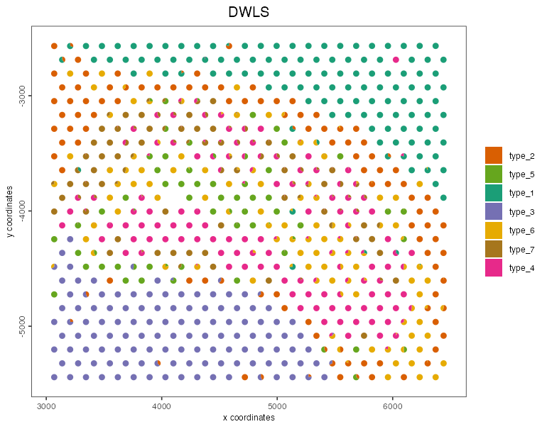
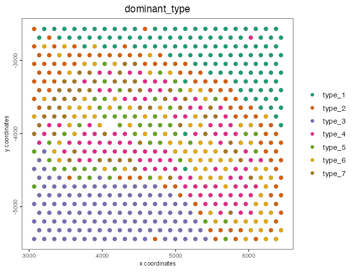

Giotto calls spatialDWLS
through runDWLSDeconv(), so a Giotto user never touches the
matrices directly: the expression, clusters and result all stay in the
Giotto object. This article shows that workflow on the small Visium
dataset that ships with GiottoData. For the same method on plain
matrices, see Get
started.
The outputs on this page were computed locally and saved, because building them needs Giotto, GiottoData and a Giotto environment. The script that produced them is
dev/render-giotto-article.R.
Setup
spatialDWLS is a suggested package of Giotto, so install both:
remotes::install_github("drieslab/spatialDWLS")
# and Giotto: https://giottosuite.com/articles/installation.html
library(Giotto)
g <- GiottoData::loadGiottoMini("visium")The mini object is a small mouse brain Visium section that has
already been normalised and clustered (leiden_clus).
1. A signature matrix
spatialDWLS needs the mean expression of each cell type over a set of
signature genes. In a real analysis that comes from a
single-cell reference of the same tissue, for example
with makeSignMatrixDWLSfromMatrix() on the reference’s
normalised expression and its cell type labels.
GiottoData has no matching single-cell reference, so for this demonstration the “cell types” are the Visium clusters themselves and the signature genes are their top markers. That is enough to show the workflow; it is not how to get biologically meaningful cell types.
markers <- findMarkers_one_vs_all(g, method = "scran",
cluster_column = "leiden_clus",
min_feats = 20)
sign_gene <- unique(markers[, head(feats, 20), by = "cluster"]$V1)
meta <- pDataDT(g)
sign_matrix <- makeSignMatrixDWLS(g,
sign_gene = sign_gene,
cell_type_vector = paste0("type_", meta$leiden_clus)
)
dim(sign_matrix)#> [1] 123 72. Deconvolve
g <- runDWLSDeconv(g,
sign_matrix = sign_matrix,
cluster_column = "leiden_clus",
n_cell = 10
)The proportions are stored in the object as a spatial enrichment
named "DWLS", one row per spot:
getSpatialEnrichment(g, name = "DWLS", output = "data.table")#> cell_ID type_1 type_2 type_3 type_4 type_5 type_6 type_7
#> <char> <num> <num> <num> <num> <num> <num> <num>
#> 1: AAAGGGATGTAGCAAG-1 0 0 0 0 0 0.5209807 0.4790193
#> 2: AAATGGCATGTCTTGT-1 1 0 0 0 0 0.0000000 0.0000000
#> 3: AAATGGTCAATGTGCC-1 0 0 1 0 0 0.0000000 0.0000000
#> 4: AAATTAACGGGTAGCT-1 0 0 1 0 0 0.0000000 0.0000000runDWLSDeconv() takes the same settings as
spatialDWLS::dwls():
-
n_cell: expected cells per spot. A cell type is kept for a spot in the second round only when its first-round share is at least1 / n_cell. -
cutoff: the enrichment score a cell type must reach in a cluster to be considered there. -
BPPARAM: run the per-spot solves in parallel, e.g.BPPARAM = BiocParallel::MulticoreParam(8). Without it, Giotto’s session default (GiottoUtils::giotto_bpparam()) is used. -
na_as_zero: spots with no signal on the signature genes areNAby default.
3. Plot
spatDeconvPlot() draws each spot as a pie of its cell
type proportions:
spatDeconvPlot(g, deconv_name = "DWLS", pie_scale = 0.4)
The proportions are ordinary columns, so anything else is a short step away, e.g. colouring spots by their dominant cell type:
dwls <- getSpatialEnrichment(g, name = "DWLS", output = "data.table")
type_cols <- setdiff(names(dwls), "cell_ID")
dominant <- type_cols[max.col(as.matrix(dwls[, type_cols, with = FALSE]))]
g <- addCellMetadata(g,
new_metadata = data.frame(cell_ID = dwls$cell_ID, dominant_type = dominant),
by_column = TRUE, column_cell_ID = "cell_ID"
)
spatPlot2D(g, cell_color = "dominant_type", point_size = 2.5)
Disk-backed objects
A Giotto object whose expression is held on disk by GiottoDisk goes
through the same runDWLSDeconv() call. GiottoDisk reads the
signature genes one window of spots at a time and hands them to
spatialDWLS::dwls_stream(), so the result is the same while
the expression never has to fit in memory.